Aim
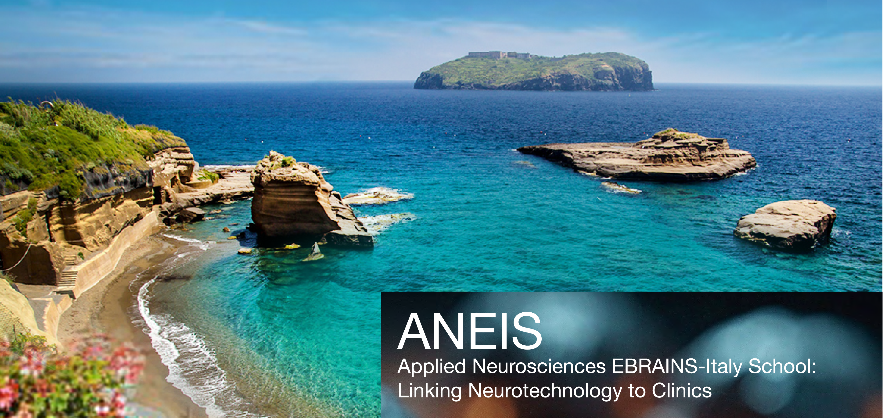
Join us this summer to ANEIS - Applied Neurosciences EBRAINS- Italy School:
Linking Neurotechnology to Clinics, for an intensive exploration of the cutting-edge
topics in neuroscience. Our program offers an immersive experience to the participants
in the forefront of neuroscience research and its applications, covering a broad range of
themes, including theoretical, computational, and systems neuroscience, data analysis,
neuroinformatics, and clinical applications. In the surroundings of the peaceful and
picturesque Ventotene island, you will engage with leading experts, participate in hands-
on sessions, and expand your network with experts in the field. Whether you are a
student, researcher, or practitioner, this program will provide you with valuable
knowledge and skills to advance your expertise in neuroscience.
Topics
- Theoretical Neuroscience: modeling biophysics and electrophysiology, from
single neurons to brain networks.
- Computational Neuroscience: design, implementation, and numerical
simulations of both theory- and data-inspired models.
- Systems Neuroscience: analysis of biological data from humans and animal
models, with a special focus on data pre-processing and production for
paradigmatic experiments.
- Data Analysis: introduction to dynamical systems approaches, machine learning
techniques, graph theory and advanced statistical methods for neural time series.
- Clinical Applications: case studies on neural modulation, exploring physical
interventions and the impact of chemical perturbations.
We look forward to welcoming you!
Programme
Monday 09/09/24
- Morning: Arrival of the delegates and welcome
- Afternoon: Neurobiology lectures
- Mavi Sanche-Vives
- Andrea D'Avella
- Antonino Cattaneo
Tuesday 10/09/24
- Afternoon: Neuroinformatics/Computational neuroscience lectures
- Yiota Poirazi
- Giancarlo La Camera
- Michele Migliore
Wedsnesday 11/09/24
Thursday 12/09/24
- Afternoon: Data analysis/ Neuroinformatics
- Alberto Mazzoni
- Maurizio Mattia / Jonathan Mapelli
- Wulfram Gerstner
Friday 13/09/24
- Afternoon: Clinical neuroscience
- Giacomo Koch
- Pierpaolo Sorrentino
- Pietro Avanzini
Saturday 14/09/24
- Presentation of projects!
- Concluding remarks
Speakers
- 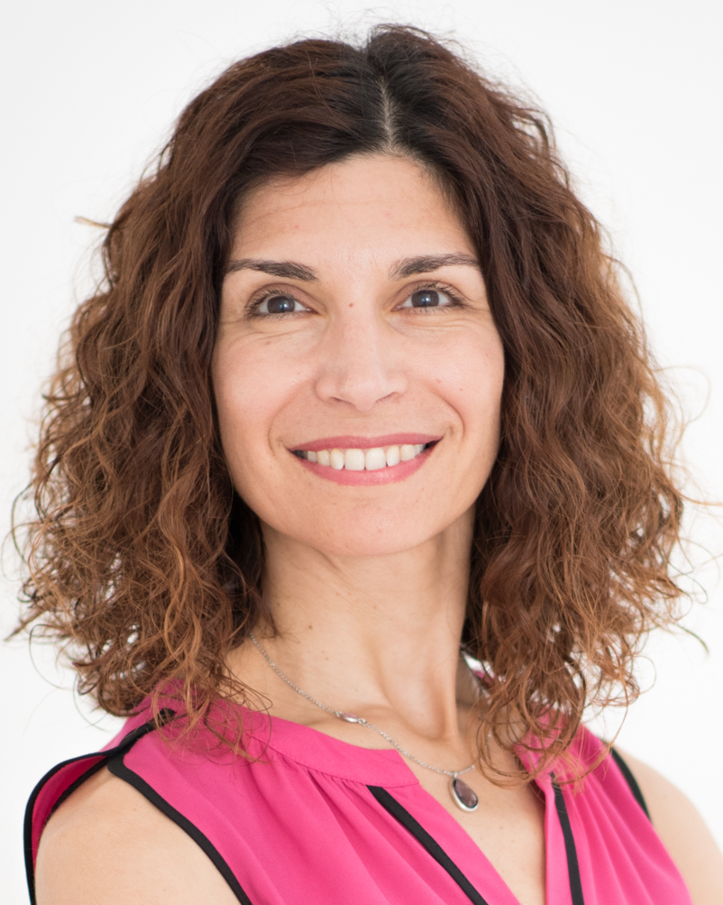
Panayiota Poirazi (IMBB-FORTH)
- 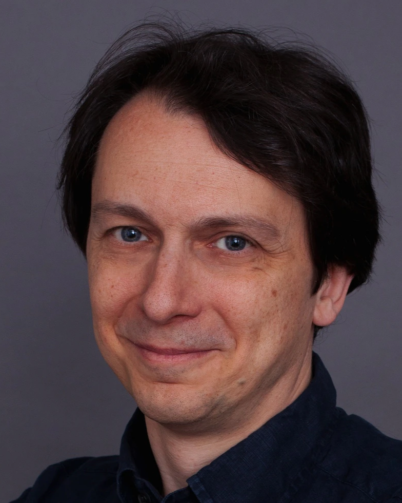
Stefano Fusi (Columbia's Zuckerman Institute)
- 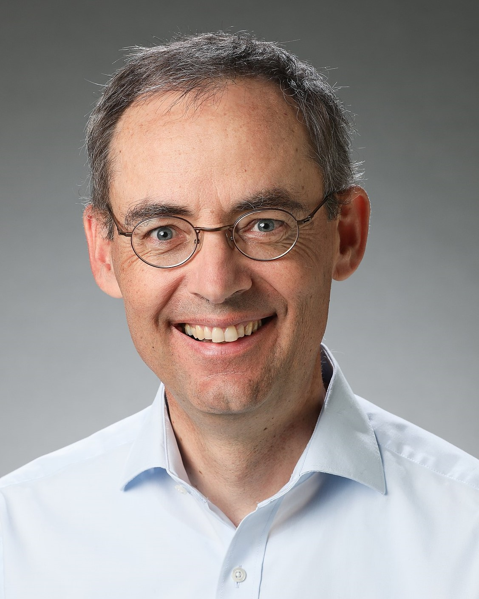
Wulfram Gerstner (EPFL)
- 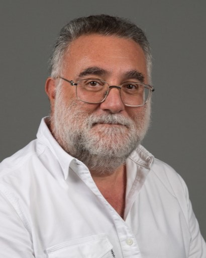
Michele Migliore (CNR IBF)
- 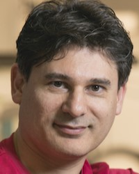
Giancarlo La Camera (Stony Brook University)
- 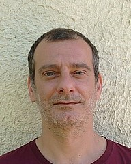
Gianluigi Mongillo (CNRS)
-
Mavi Sanchez-Vives (IDIBAPS)
-
Andrea D'Avella (UNIME)
-
Antonino Cattaneo (Scuola Normale Superiore, Pisa)
-
Alessandro Treves (SISSA)
-
Alberto Mazzoni (Scuola Superiore Sant'Anna)
-
Giacomo Koch (UNIFE)
-
Pierpaolo Sorrentino (UNISS)
-
Pietro Avanzini (CNR)
Organizers
- 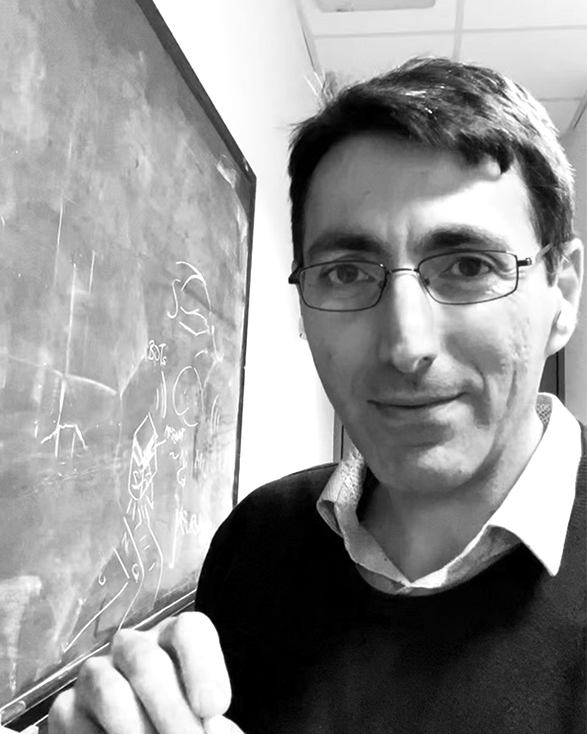
Michele Giugliano (UNIMORE)
- 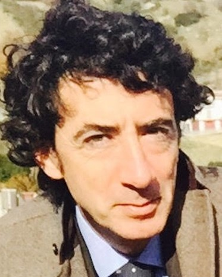
Stefano Ferraina (UNIROMA1)
- 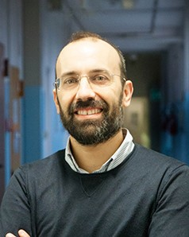
Jonathan Mapelli (UNIMORE)
- 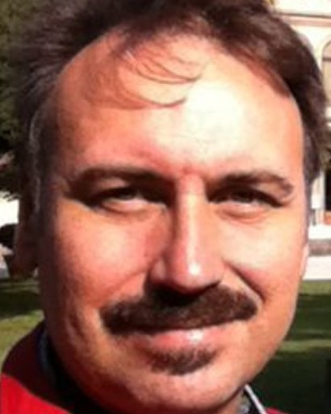
Maurizio Mattia (ISS)
Registration
Deadline for registration: June 30
Register using the Google FORM
You will need:
A raccomandation letter written by a senior resercher
Your CV, including a short summmary of it (max 500 words)
A motivational letter where you explain why you are intersted to take part at the ANEIS School and why you should be chosen (max one A4 page text 10 pt)
Registration fee: ??? €
The registration fee will include:
Accomodation in the island
Meals
Social dinner
Touristic boat trip!
Travel expenses are NOT included
Travel
How to reach the location:
More info soon
Hands-on Projects
- Motor planning decoding in NHP
- Inferring RNN models matching data
- Inferring single-cell parametres from electrophysiological traces
- Reconstruction of network from anatomical imaging